Cacería del sábado
Cada sábado a las 22:00 (hora peninsular española), todo el clan sale de caza en la voz del Discord.
Próxima cacería
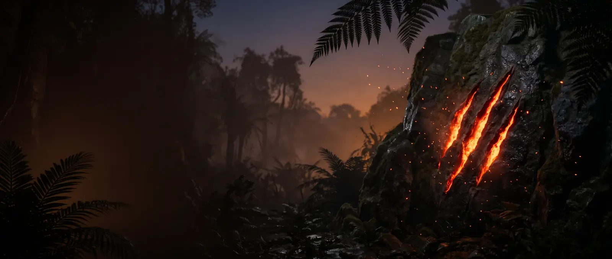
Reclutamiento abierto
Jugadores de España y Latinoamérica que cazan, anidan y sobreviven en manada, con voz en Discord. Para quien empieza y para quien lleva años en la isla.
Quiénes somos
GARRA IBÉRICA es un clan español de The Isle Evrima, el juego de supervivencia de dinosaurios para PC. No somos un servidor de juego: somos una comunidad hispana con su propio servidor de Discord, donde nos organizamos para jugar juntos en Asura, un servidor no oficial. Nacimos en España, jugamos con gente de toda Latinoamérica y el idioma del clan es el español.
En la isla, ir en manada lo cambia todo: cazas presas que solo no podrías, proteges tu nido y creces con alguien cubriéndote las espaldas. Buscamos jugadores constantes y buenos compañeros, más que expertos: si acabas de empezar, los veteranos te enseñan; si ya llevas tiempo, aquí tienes grupo fijo. Y sin toxicidad, con normas claras.
Si buscabas un clan hispano, latino o simplemente hispanohablante, o un Discord de The Isle en español, estás en el sitio correcto. Quién lleva el clan, sus batallas y cómo se sube, en El clan.
La web del clan
Cada sábado a las 22:00 (hora peninsular española), todo el clan sale de caza en la voz del Discord.
Próxima cacería
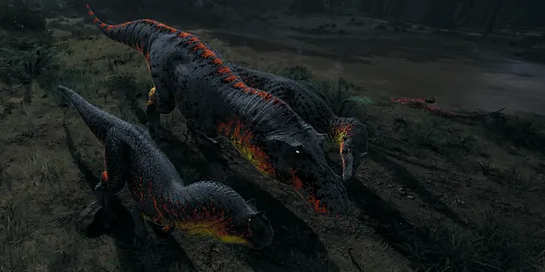
Tres Alfas al mismo nivel, nuestras batallas y los rangos, de Recluta a Alfa.
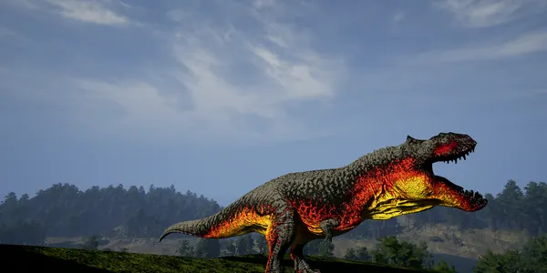
Tres pasos dentro del Discord y qué hacer tu primera semana.
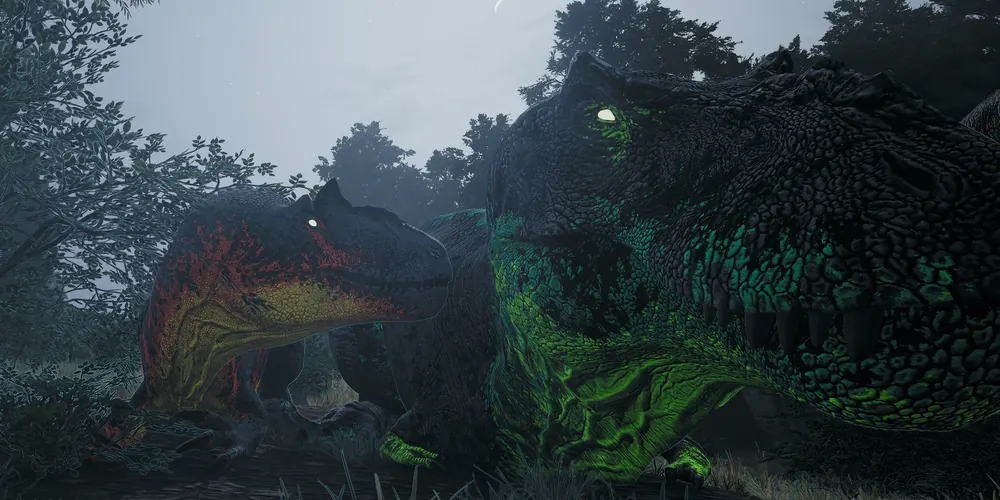
Las 22 fichas del clan: peso, crecimiento, grupo máximo, controles y, si hay una fuente fiable, las mutaciones que recomienda la comunidad. También, cómo funciona la dieta.
Los logros de Asura, sesión a sesión, con tus marcas guardadas y lo que te toca ahora.
La manada en la isla, con la skin del clan.
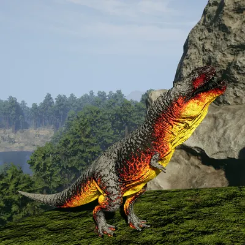
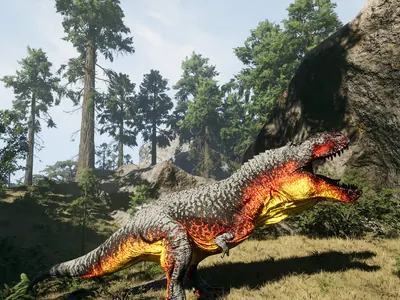
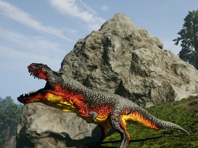
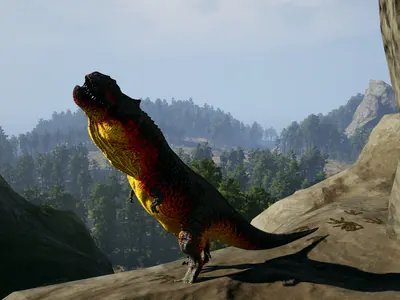
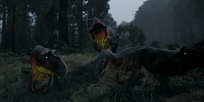
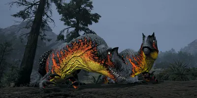
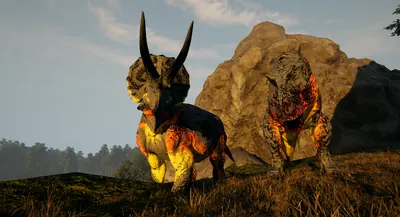
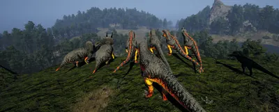
Entra en nuestro Discord de The Isle en español, lee las normas y manda tu solicitud.
Únete a GARRA IBÉRICA en Discord (se abre en una pestaña nueva)